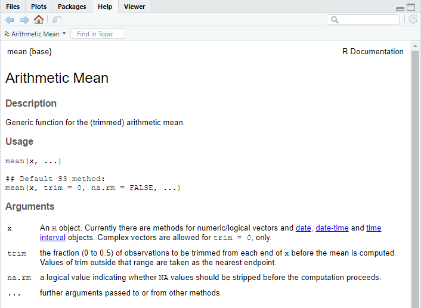
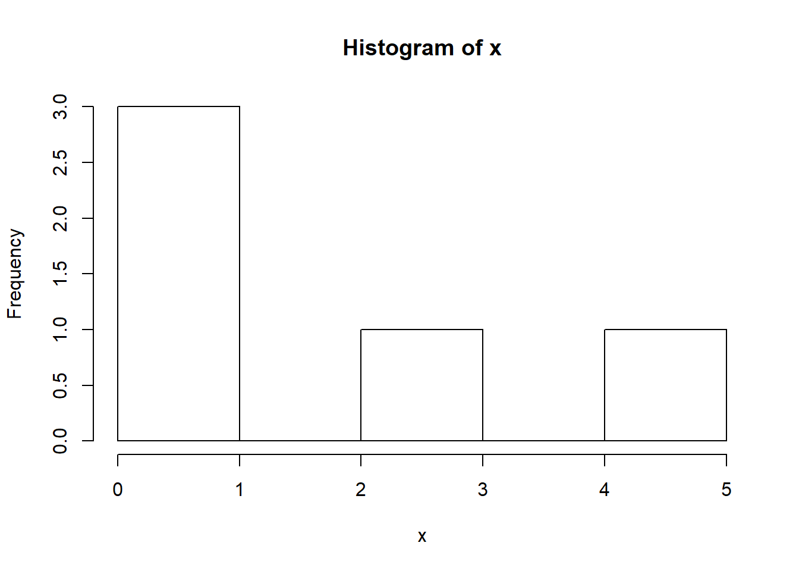
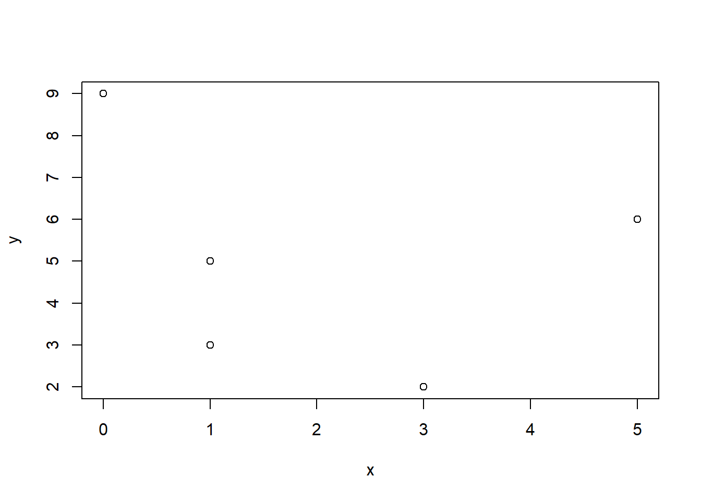

Kapitel 3 Data, objekt och funktioner
För att kunna arbeta med statistik och dataanalys är det viktigt att inte enbart förstå den statistiska metoden och kunna lösa problem med hjälp av en miniräknare. I praktiken är det även nödvändigt att förstå hur data hanteras, lagras och struktureras. I detta kapitel introduceras typer av data som normalt hanteras i R, sedan följer avsnitt om de olika typer av objekt som finns i R. Kapitlet avslutas med se på vad en funktion i R är för något och hur funkioner kan användas för att hantera objekt. Detta är ett omfattande kapitel, men det är viktigt att du kan hantera allt som presenteras. Avsikten med kaptitlet är nämligen att ta upp de allra vanligaste.
3.1 Data och objekt
Utan data är statistik innehållslöst. På samma sätt är data grundläggande för arbete i R. De vanligaste datatyperna i R är
- character (text), som anges med citationstecken t ex “a”, “3”.
- numeric (decimaltal), t ex är 3, 32.1. Notera att 3 kan skriva 3.0.
- integer (heltal). 3, 32. Skillnaden mellan numeric och integer är att inga decimaler sparas, vilket spar minne.
- logical (data indikerar om något är sant eller falskt, TRUE/FALSE).
Observera att dessa datatyper beskriver hur data är lagrad och hur R ska tolka data. Det säger sig kanske självt att det inte går att använda räkneoperation om data är character (text).
Datatyper ska inte förväxlas med de datanivåer (nominal, ordinal, intervall och kvotskala) som man normalt förknippar med statistiska analyser. Datatyper ska inte heller förväxlas med om data är diskreta, kontinuerliga, kategorier eller kvantitativa.
Det är mycket viktigt för alla som arbetar med statistiska analyser av data att kunna tillämpa alla ovanstående begrepp på rätt situation. Ofta överlappar begreppen, men det är vanligt att begreppen inte gör det. Tabellen nedan ger en översikt av begreppen som används, men notera att det finns undantag från denna klassificering och det finns andra sätt att klassificera.
| Mätskala | Variabeltyp | Datatyp i R |
|---|---|---|
| Nominal | Kategori, kvalitativ | Character, factor med ordered = FALSE |
| Ordinal | Kategori, kvalitativ | Character, factor med ordered = TRUE |
| Intervall | Kvantitativ, kontinuerlig, heltal, diskret | Numeric, integer |
| Kvot | Kvantitativ, kontinuerlig, heltal, diskret | Numeric, integer |
Data hanteras och sparas som objekt. För att skapa ett objekt används assignment-operatorn <-. Objektet sparas därmed i minnet i R, men inget resultat redovisas i Console. Om R stängs ner måste objektet skapas på nytt såvida användaren inte har angett att objektet ska sparas.
I regel arbetar man i R med flera olika objekt samtidigt. Objekten måste därför namnges och precis som Vid all programmering är noggrannhet a och o. Objektnamn inleds med en bokstav och får endast innehålla bokstäver, siffror, _ och .. Dessutom skiljer R på versaler och gemener. Det är inte alltid enkelt att namnge objekt, men det viktigaste är att vara konsekvent. På denna kurs rekommenderas följande principer för namngivning av objekt. Använd
- endast gemener.
- korta och logiska namn, t ex kan objektet population förkortas till pop.
- gärna understreck _ för sammanbinda långa objektnamn. Objektet ålder för kvinnor skulle kunna betecknas age_women och motsvarande för män är då age_men.
- Använd inte å, ä och ö.
- inte namn som redan är upptagna i R, t ex exp eller log.
Det tre vanligaste objekten för hantering av data är:
- vektorer,
- matriser,
- data frames.
3.2 Vektorer
En vektor är ett dataobjekt som är endimensionellt och består av \(n\) element. En vektor skapas med kommandot c() (‘’Combine Values into a Vector’’). Anta att vi observerar värdena \(3,-1,1,5,0\). Med hjälp av nedanstående kod skapas ett vektor-objekt med med 5 element:
# Skapa din första numeriska vektor
my__first_vec <- c(3, -1, 1, 5, 0)Notera att inget visas i Console, men att objektet finns sparat i minnet upptäcker man i RStudio genom att observera den övre högra panelen under fliken Environment. Där listas alla objekt som finns sparade i minnet i R. För att titta på objektet exekveras objektet genom att köra nedanstående kod.
> # Visa din första numeriska vektor
> my__first_vec
> [1] 3 -1 1 5 0Du ska nu skapa ett antal vektorobjekt som sedan på olika sätt ska manipuleras.
- Skapa ett script som heter kap3_objekt_och_funktioner.R genom att välja File > New File > R Script och sedan direkt spara scriptet med File > Save As i mappen A5Rkod.
- Skriv in koden nedan i scriptet och spara med File > Save. Det är bra att få rutin på att ofta spara sitt script så att inte kod råkar försvinna.
# Skapar två numeriska vektorer
x <- c(3, 1, 1, 5, 0)
y <- c(2, 3, 5, 6, 9)
# Kombinera vektorer till en ny vektor
z <- c(x, y)Generellt gäller i R att om \(x\) är en vektor bestående av \(k\) element \[x = (x_1,x_2,\ldots,x_k)\] och \(y\) är en vektor bestående av \(l\) element \[y = (y_1,y_2,\ldots,y_l)\] så skapar kommandot
z <- c(x,y)en vektor med \(k + l\) element, \[z= (x_1,x_2,\ldots,x_k,y_1,y_2,\ldots,y_l)=(z_1,z_2,\ldots,z_{k+l}).\] För att se om detta stämmer tittar vi på objekten genom att exekvera dem.
- Fortsätt scriptet genom att skriva in nedanstående kod. Spara och kör koden.
x
y
zI Console ser du då följande:
> x
> [1] 3 1 1 5 0
> y
> [1] 2 3 5 6 9
> z
> [1] 3 1 1 5 0 2 3 5 6 9Både \(x\), \(y\) och \(z\) är numeriska vektorer. Det går även att skapa en vektor bestående av bokstäver. För att skapa en sådan vektor (character vector) sätts de enskilda elementen inom citationstecken.
- Fortsätt scriptet och skriv in nedanstående kod i scriptet, spara och kör koden.
# Skapar en vektor med ord
nordic_countries <- c("Denmark", "Finland", "Iceland", "Norway", "Sweden")
nordic_countriesI Console ser du då följande resultat.
> # Skapar en vektor med ord
> nordic_countries <- c("Denmark", "Finland", "Iceland", "Norway", "Sweden")
> nordic_countries
> [1] "Denmark" "Finland" "Iceland" "Norway" "Sweden"Kombineras en numerisk och en character-vektor blir hela vektorn en character-vector.
- Skriv följande kod i scriptet, spara och kör koden.
# Kombinera en numerisk vektor med en vektor med ord
x_nordic_countries <- c(x, nordic_countries )
x_nordic_countriesI Console erhålls följande output och vi ser att de tidigare numeriska värdena nu omges av citationstecken.
> # Kombinera en numerisk vektor med en vektor med ord
> x_nordic_countries <- c(x, nordic_countries )
> x_nordic_countries
> [1] "3" "1" "1" "5" "0" "Denmark" "Finland"
> [8] "Iceland" "Norway" "Sweden"Om en numerisk vektor kombineras med en vektor med bokstäver så blir hela vektorn en character-vektor. R tolkas alltså siffrorna som bokstäver/tecken utan relation till numeriska värden. Det ser vi genom att det finns finns citationstecken kring siffrorna.
Vi ska nu se introducera hur man på andra sätt kan skapa vektorer typer av vektorer.
- Skriv in nedanstående kod i scriptet och spara. Kör koden.
# Skapar en vektor med värdena 1,2,3,4,5
v <- 1:5
# Skapar en vektor med endast ett element
u <- 150
# Skapar en vektor med ett bortfall.
ymis <- c(3, NA, 6, 3, 6)I Console visas
> # Skapar en vektor med värdena 1,2,3,4,5
> v <- 1:5
> # Skapar en vektor med endast ett element
> u <- 150
> # Skapar en vektor med ett bortfall.
> ymis <- c(3, NA, 6, 3, 6)För att sammanfatta så har vi har hittills skapat numeriska vektorer, vektorer som enbart innehåller bokstäver och vektorer som skapats genom sekvenser. Vidare finns vektorer med bortfall anges med NA (Not Available).

- En vektor som innehåller enbart en datatyp kallas för atomic. Detta kan vara värt att känna till eftersom eftersom det är vanligt att felmeddelande referar till just att en vektor inte är atomic.
- Inled en rad med # för att kommentera kod. Kommentera alltid kod!. Vid all programmering är det viktigt att förklara kod så att du själv och andra snabbt förstår vad koden gör. Det är viktigt att få rutin på att kommentera, kommentera därför även enkel kod.
Nya vektorer kan skapas med räkneoperationer. Beräkningarna sker då elementvis, till exempel adderas elementvärden i en vektor till elementvärden i en annan vektor som har motsvarade position. Vektorerna måste
- antingen ha lika många element eller
- att den enda vektorna består av en konstant.
- Skriv in nedanstående i ditt script, spara och kör.
# Addition av x och y
x + y
# Multiplikation av x och y
x * y
# Potenser skrivs med a^b
y^2
# En konstant u adderas till alla element i vektorn
x + u
# Räkneoperationer med NA ger NA
x + ymis
# Division med 0 är ej definierat. R anger det som Inf (infinity)
# eller NaN (Not a Number) om det är 0/0.
x/0
# Exempel på längre räkneoperationer.
# Notera att alla beräkningar är elementvisa.
w <- x + (y^2 - u)/v
wI Console visas
> # Addition av x och y
> x + y
> [1] 5 4 6 11 9
> # Multiplikation av x och y
> x * y
> [1] 6 3 5 30 0
> # Potenser skrivs med a^b
> y^2
> [1] 4 9 25 36 81
> # En konstant u adderas till alla element i vektorn
> x + u
> [1] 153 151 151 155 150
> # Räkneoperationer med NA ger NA
> x + ymis
> [1] 6 NA 7 8 6
> # Division med 0 är ej definierat. R anger det som Inf (infinity)
> # eller NaN (Not a Number) om det är 0/0.
> x/0
> [1] Inf Inf Inf Inf NaN
> # Exempel på längre räkneoperationer.
> # Notera att alla beräkningar är elementvisa.
> w <- x + (y^2 - u)/v
> w
> [1] -143.00000 -69.50000 -40.66667 -23.50000 -13.80000Ovanstående illustrerar att genom att användning av objekt kan beräkningar förenklas.
Nu ska vi se vad som händer om elemementen består av olika antal element. Skriv i Console in nedanstående kod och tryck enter.
x + c(2,5,6)I Console visas
> x + c(2,5,6)
> Warning in x + c(2, 5, 6): longer object length is not a multiple of
> shorter object length
> [1] 5 6 7 7 5Detta innebär att om vektorn \(x\) (innehållande 5 element) adderas till en vektor bestående av endast 3 element, dvs antalet element skiljer sig åt, erhålls ett felmeddelande. Det gäller oavsett räknesätt. Om däremot den ena vektorn är en konstant, som i exemplet med vektorn \(u\) ovan, fungerar beräkningarna genom att konstanten beräknas för alla element i den större vektorn.
3.2.1 Vektorer och indexering
Vi ska nu presentera hur enskilda element kan väljas ut i vektorer. Eftersom data i praktiken alltid måste anpassas för planerade analyser är detta nödvändigt. Det mest grundläggande i hantering av vektorer är att konstatera att varje element i en vektor har en position. Med hakparenteser [] erhålls åtkomst till ett eller flera element.
- Skriv in nedanstående i ditt script, spara och kör.
# Visa element nummer 2 i vektorn x
x[2]
# Visa element 2, 3 och 4 i vektorn y
y[c(2,3,4)]I Console redovisas
> # Visa element nummer 2 i vektorn x
> x[2]
> [1] 1
> # Visa element 2, 3 och 4 i vektorn y
> y[c(2,3,4)]
> [1] 3 5 6Det går även att spara utvalda element till en ny vektor.
- Skriv in nedanstående i ditt script.
# Spara element nummer 2 i vektorn x2
x2 <- x[2]
x2
# Visa element 2, 3 och 4 i vektorn y234
y234 <- y[c(2,3,4)]
y234I Console redovisas
> # Spara element nummer 2 till vektorn x2
> x2 <- x[2]
> x2
> [1] 1
> # Spara element 2, 3 och 4 till vektorn y234
> y234 <- y[c(2,3,4)]
> y234
> [1] 3 5 6Det går att tillämpa negativ indexering för att exkludera angivna element. Resterande element i en vektor behålls då.
- Skriv in nedanstående i scriptet, spara, och kör.
# Spara element nummer 1,3,4,5 till vektorn x1345
x1345 <- x[-2]
x1345
# Spara element 1 och 5 till vektorn y15
y15 <- y[-c(2,3,4)]
y15I Console redovisas nedanstående.
> # Spara element nummer 1,3,4,5 till vektorn x1345
> x1345 <- x[-2]
> x1345
> [1] 3 1 5 0
> # Spara element 1 och 5 till vektorn y15
> y15 <- y[-c(2,3,4)]
> y15
> [1] 2 9En viktigt skäl till att identifiera element är att användaren då på ett enkelt sätt kan hantera värden som identifierade element har.
- Skriv i nedanstående i scriptet, spara och kör.
# Ändra element 3 från 1 till 4
x_new <- x
x_new[3] <- 4
x_new
# Ändra element 3 från "Iceland" till 4
nordic_countries_new <- nordic_countries
nordic_countries_new[3] <- 4
nordic_countries_new I Console redovisas nedanstående.
> # Ändra element 3 från 1 till 4
> x_new <- x
> x_new[3] <- 4
> x_new
> [1] 3 1 4 5 0
> # Ändra element 3 från "Iceland" till 4
> nordic_countries_new <- nordic_countries
> nordic_countries_new[3] <- 4
> nordic_countries_new
> [1] "Denmark" "Finland" "4" "Norway" "Sweden"Ovanstående kod illustrerar två vanliga företeelser:
- Vektorerna x_new och nordic_countries_new skapas på grund av att användaren ofta önskar behålla originalvektorerna x och nordic_countries. Detta är ofta önskvärt.
- Om ett numeriskt värde läggs till en vektor med bokstäver så tolkas det numeriska värdet som ett tecken, dvs “4”. Det illustrerar vikten av vara noga med om vektorerna är numeriska eller character
3.2.2 Vektorer och logiska operatorer
Istället för att direkt identifiera positionen i vektorn kan man använda logiska operatorer. Några vanliga och viktiga logiska operatorer är:
>är större än.<är mindre än.>=större än eller lika med<=mindre än eller lika med==lika med.!=är ej lika medx|y\(x\) eller \(y\)x & y\(x\) och \(y\)
Genom att använda dessa kan användaren direkt hantera data i vektorn.
- Fortsätt scriptet genom att skriva in nedanstående kod. Spara och kör koden.
# Visa element i vektor y som är större än 6
y[y > 6]
# Visa element i vektor y som är större än eller lika med 6
y[y >= 6]
# Visa element i vektor y från positioner där x har värden lika med 1.
# (Kräver att x och y har lika många element)
y[x == 1]
# Visa element i vektor där x är ej lika med 1.
y[x != 1]
# Visa element i vektor y från positioner där nordic_countries == "Finland"
y[nordic_countries == "Finland"]I Console visas
> # Visa element i vektor y som är större än 6
> y[y > 6]
> [1] 9
> # Visa element i vektor y som är större än eller lika med 6
> y[y >= 6]
> [1] 6 9
> # Visa element i vektor y från positioner där x har värden lika med 1.
> # (Kräver att x och y har lika många element)
> y[x == 1]
> [1] 3 5
> # Visa element i vektor där x är ej lika med 1.
> y[x != 1]
> [1] 2 6 9
> # Visa element i vektor y från positioner där nordic_countries == "Finland"
> y[nordic_countries == "Finland"]
> [1] 3Precis som förut skapas i regel nya vektorer när logiska operatorer tillämpas.
- Skriv in nedanstående i scriptet, spara och kör koden.
# Välj vektorn som är större än eller lika med 6
ysub <- y[y >= 6]
# Skapa en binär vektor x_bin som är 1 om x är större än eller lika med 3 och 0
# om x är mindre än 3. Börja med att skapa en tom vektor med motsvarande antal element
# och fyll sedan denna med saknade värden.
x_bin <- c(NA, NA, NA, NA, NA)
x_bin[x >=3] <- 1
x_bin[x < 3] <- 0
# Skapa en tom vektor med 5 element och fyll därefter denna vektor med
# data om landet är skandinaviskt eller ej
scandinavia <- c(NA, NA, NA, NA, NA)
scandinavia[nordic_countries == "Finland"] <- "Not scandinavia"
scandinavia[nordic_countries == "Denmark"] <- "Scandinavia"
scandinavia[nordic_countries == "Sweden"] <- "Scandinavia"
scandinavia[nordic_countries == "Norway"] <- "Scandinavia"
scandinavia[nordic_countries == "Iceland"] <- "Not scandinavia"
scandinaviaI Console visas
> # Välj vektorn som är större än eller lika med 6
> ysub <- y[y >= 6]
>
> # Skapa en binär vektor x_bin som är 1 om x är större än eller lika med 3 och 0
> # om x är mindre än 3. Börja med att skapa en tom vektor med motsvarande antal element
> # och fyll sedan denna med saknade värden.
> x_bin <- c(NA, NA, NA, NA, NA)
> x_bin[x >=3] <- 1
> x_bin[x < 3] <- 0
> x
> [1] 3 1 1 5 0
> x_bin
> [1] 1 0 0 1 0
> # Skapa en tom vektor med 5 element och fyll därefter denna vektor med
> # data om landet är skandinaviskt eller ej
> scandinavia <- c(NA, NA, NA, NA, NA)
> scandinavia[nordic_countries == "Finland"] <- "Not scandinavia"
> scandinavia[nordic_countries == "Denmark"] <- "Scandinavia"
> scandinavia[nordic_countries == "Sweden"] <- "Scandinavia"
> scandinavia[nordic_countries == "Norway"] <- "Scandinavia"
> scandinavia[nordic_countries == "Iceland"] <- "Not scandinavia"
> scandinavia
> [1] "Scandinavia" "Not scandinavia" "Not scandinavia" "Scandinavia"
> [5] "Scandinavia"OVanstående moment är viktigt. Här illustreras nämligen en grundläggande princip för skapandet av nya variabel, dvs först skapa en tom vektor som sedans fylls med information. Även om det finns alternativa kompaktare sätt att koda om vektorer (och följaktligen variabler), är det ovanstående tillvägagångssätt som rekommenderas starkt på denna kurs.
Nästa steg är att använda den logiska operatorn &.
- Skriv in nedanstående i scriptet, spara och kör koden.
# Skapa en vektor z_trinary som är
# 1 om z är mindre än eller lika med 1
# 2 om z är större än 1 eller mindre än eller lika med 5
# 3 om z är större än 5
z_trinary <- c(NA,NA,NA,NA,NA,NA,NA,NA,NA,NA)
z_trinary[z <= 1] <- 1
z_trinary[(z > 1) & (z <=5)] <- 2
z_trinary[z > 5] <- 3
z
z_trinary
# Skapa en binära variabler z1, z2 och z3
z1 <- c(NA,NA,NA,NA,NA,NA,NA,NA,NA,NA)
z1[z_trinary == 1] <- 1
z1[z_trinary == 2] <- 0
z1[z_trinary == 3] <- 0
z2 <- c(NA,NA,NA,NA,NA,NA,NA,NA,NA,NA)
z2[z_trinary == 1] <- 0
z2[z_trinary == 2] <- 1
z2[z_trinary == 3] <- 0
z3 <- c(NA,NA,NA,NA,NA,NA,NA,NA,NA,NA)
z3[z_trinary == 1] <- 0
z3[z_trinary == 2] <- 0
z3[z_trinary == 3] <- 1
z1
z2
z3I Console redovisas följande.
> # Skapa en vektor z_trinary som är
> # 1 om z är mindre än eller lika med 1
> # 2 om z är större än 1 eller mindre än eller lika med 5
> # 3 om z är större än 5
> z_trinary <- c(NA,NA,NA,NA,NA,NA,NA,NA,NA,NA)
> z_trinary[z <= 1] <- 1
> z_trinary[(z > 1) & (z <= 5)] <- 2
> z_trinary[z > 5] <- 3
> z
> [1] 3 1 1 5 0 2 3 5 6 9
> z_trinary
> [1] 2 1 1 2 1 2 2 2 3 3
>
> # Skapa en binära variabler z1, z2 och z3
> z1 <- c(NA,NA,NA,NA,NA,NA,NA,NA,NA,NA)
> z1[z_trinary == 1] <- 1
> z1[z_trinary == 2] <- 0
> z1[z_trinary == 3] <- 0
>
> z2 <- c(NA,NA,NA,NA,NA,NA,NA,NA,NA,NA)
> z2[z_trinary == 1] <- 0
> z2[z_trinary == 2] <- 1
> z2[z_trinary == 3] <- 0
>
> z3 <- c(NA,NA,NA,NA,NA,NA,NA,NA,NA,NA)
> z3[z_trinary == 1] <- 0
> z3[z_trinary == 2] <- 0
> z3[z_trinary == 3] <- 1
> z1
> [1] 0 1 1 0 1 0 0 0 0 0
> z2
> [1] 1 0 0 1 0 1 1 1 0 0
> z3
> [1] 0 0 0 0 0 0 0 0 1 1Ett par viktiga punkter att komma ihåg är
- Arbetsgången är att en ny vektor skapas, vilken sedan fylls på. För en binär variabel skulle vi teoretiskt kunna använda operatorn !=, men detta kan dels leda till att NA i en vektor kodas till 0, dels att datatvätten blir mindre noggrann. Ovanstående metodik för att skapa ny variabler är transparent.
- Använd parenteser för att undvika eventuella fel, som till exempel var fallet med (z > 1) & (z <= 5).
Avslutningsvis ska vi använda den logiska operatorn |.
- Skriv in nedanstående i scriptet, spara och kör koden.
# Om z1 = 1 eller z3 = 1, så ska w_bin = 1.
# Om z2 = 1 så ska d_bin = 0.
# Skapa en tom vektor w_bin
d_bin <- c(NA,NA,NA,NA,NA,NA,NA,NA,NA,NA)
d_bin[(z1 == 1) | (z3 == 1)] <- 1
d_bin[z2 == 1] <- 0
z1
z2
z3
w_bin
# Om landet är Norge eller Island och x > 4 eller w > -50 så ska vi sätta NA
y_new <- y
y_new[( (nordic_countries == "Iceland") | (nordic_countries == "Norway") ) &
( (x > 4) | (w > -50) ) ] <- NA
nordic_countries
x
w
y_newI Console ser vi utskrifterna. Om du inte har förstått koden, så kan du jämföra vektorerna och se varför w_bin och y_new har fått de värden som de har.
# Om z1 = 1 eller z3 = 1, så ska w_bin = 1.
# Om z2 = 1 så ska d_bin = 0.
# Skapa en tom vektor w_bin
d_bin <- c(NA,NA,NA,NA,NA,NA,NA,NA,NA,NA)
d_bin[(z1 == 1) | (z3 == 1)] <- 1
d_bin[z2 == 1] <- 0
z1
z2
z3
w_bin
# Om landet är Norge eller Island och x > 4 eller w > -50 så ska vi sätta NA
y_new <- y
y_new[( (nordic_countries == "Iceland") | (nordic_countries == "Norway") ) &
( (x > 4) | (w > -50) ) ] <- NA
nordic_countries
x
w
y_newOvanstående sätt att förändra och skapa vektorer används mycket ofta i R och kan hantera mycket av den praktiska datahantering som du kommer att stöta på under denna kurs, men också ute i arbetslivet. Som tidigare nämnts finns andra sätt att åstadkomma samma resultat, som kanske till och med i specifika avseenden bättre, men utgå på denna kurs från kod som presenteras här.
Det bör nämnas att det naturligtvis finns mycket mer att lära sig om hur logiska operatorer fungerar. Till exempel skapar nedanstående kod den sista datatypen som nämndes inledningsvis, dvs logical data.
- Skriv in nedanstående i scriptet, spara och kör koden.
# Ger en logisk vektor
(x > 4) ## [1] FALSE FALSE FALSE TRUE FALSE# Multiplikation med en logisk vektor
1*(x > 4) ## [1] 0 0 0 1 04*(x > 4) ## [1] 0 0 0 4 0Spara scriptet kap3_objekt_och_funktioner.R.
3.3 Matriser
En matris är ett tvådimensionellt dataobjekt bestående av rader och kolumner. Notera ordningen, dvs en matris storlek anges först med rader, sedan med kolumner. Analogt med c(), som kombinerar element till en vektor, används rbind() och cbind() för att binda ihop vektorer radvis eller kolumnvis till matriser. En matris måste innehålla element av samma datatyp, vilket innebär att det inte går att binda samman numeriska vektorer som med vektorer som innehåller bokstäver. En matris kan även skapas direkt med kommandot matrix() som transformerar en vektor med \(k\) antal element till en matris bestående motsvarande antal element fördelat på antal rader och kolumner.
- Fortsätt scriptet kap3_objekt_och_funktioner.R och skriv in nedanstående kod. Spara scriptet och kör.
# Skapa en matris genom att binda samman x och y radvis. Matrisen får 2 rader och 5 kolumner
m1 <- rbind(x, y)
m1
# Skapa en matris genom att binda samman x, y, n och x radvis. Matrisen får 5 rader och 4 kolumner.
m2 <- cbind(x, y, n, x)
m2
# Skapa en matris genom att binda samman x och ymis radvis. Matrisen får 5 rader och 2 kolumner.
m3 <- rbind(x, ymis)
m3
# Skapa med matrix() en matris med två rader och 5 kolumner.
# Matrisen fylls på kolumnvis och notera att detta inte blir samma som m1.
m4 <- matrix(z, 2, 5)
m4
# Skapa med matrix() en matris med fem rader och 2 kolumner.
# I detta fall är de två första kolumnerna i m2 samma som m5.
m5 <- matrix(z, 5, 2)
m5I Console visas
> # Skapa en matris genom att binda samman x och y radvis. Matrisen får 2 rader och 5 kolumner
> m1 <- rbind(x, y)
> m1
> [,1] [,2] [,3] [,4] [,5]
> x 3 1 1 5 0
> y 2 3 5 6 9
> # Skapa en matris genom att binda samman x, y, n och x radvis. Matrisen får 5 rader och 4 kolumner.
> m2 <- cbind(x, y, u, x)
> m2
> x y u x
> [1,] 3 2 150 3
> [2,] 1 3 150 1
> [3,] 1 5 150 1
> [4,] 5 6 150 5
> [5,] 0 9 150 0
> # Skapa en matris genom att binda samman x och ymis radvis. Matrisen får 5 rader och 2 kolumner.
> m3 <- rbind(x, ymis)
> m3
> [,1] [,2] [,3] [,4] [,5]
> x 3 1 1 5 0
> ymis 3 NA 6 3 6
> # Skapa med matrix() en matris med två rader och 5 kolumner.
> # Matrisen fylls på kolumnvis och notera att detta inte blir samma som m1.
> m4 <- matrix(z, 2, 5)
> m4
> [,1] [,2] [,3] [,4] [,5]
> [1,] 3 1 0 3 6
> [2,] 1 5 2 5 9
> # Skapa med matrix() en matris med fem rader och 2 kolumner.
> # I detta fall är de två första kolumnerna i m2 samma som m5.
> m5 <- matrix(z, 5, 2)
> m5
> [,1] [,2]
> [1,] 3 2
> [2,] 1 3
> [3,] 1 5
> [4,] 5 6
> [5,] 0 9

Använd på denna kurs rbind() och cbind() vid skapande av matriser. Det är då mindre risk för för missförstånd var elementen hamnar i matrisen.
För åtkomst till element krävs nu, eftersom matriser består av rader och kolumner, att bägge dimensionerna anges. Först anges radnummer, sedan kolumnnummer.
- Skriv in nedanstående kod i scriptet, spara och kör.
# Visa element på rad 2 och kolumn 3
m1[2,3]
# Visa element på rad 2 och alla kolumner
m1[2,]
# Visa element på alla rader och kolumner 3
m1[,3]
# Visa
m2[c(1,2),]I Console visas
> # Visa element på rad 2 och kolumn 3
> m1[2,3]
> y
> 5
> # Visa element på rad 2 och alla kolumner
> m1[2,]
> [1] 2 3 5 6 9
> # Visa element på alla rader och kolumner 3
> m1[,3]
> x y
> 1 5
> # Visa
> m2[c(1,2),]
> x y u x
> [1,] 3 2 150 3
> [2,] 1 3 150 1Precis som vad gäller vektorer går det att utföra elementvisa beräkningar. Det kräver att matriserna har samma antal rader och kolumner. Det går även att utföra räkneoperationer med en konstant. Observera att elementvis multiplikation inte är detsamma som matematikens matrismultiplikation. Det är naturligtvis inga problem att i R använda matrismultiplikation, men detta går utanför kursens avgränsning.
- För att exemplfiera räkneoperationer med matriser, skriv in nedanstående kod i scriptet, spara och kör.
# Addera element i matris 1 med element i matris 3
m1 + m3
# Multiplicera element i matris 1 med element i matris 3. OBS! Detta är inte matrismultiplikation!
m1 * m3
# Dividera element i matris 1 med en konstant u
m1 / u
# Nedanstående är INTE det som inom matematiken benämns inversen av en matris, utan är 1/elementvärde
1/m1 I Console visas
> # Addera element i matris 1 med element i matris 3
> m1 + m3
> [,1] [,2] [,3] [,4] [,5]
> x 6 2 2 10 0
> y 5 NA 11 9 15
> # Multiplicera element i matris 1 med element i matris 3. OBS! Detta är inte matrismultiplikation!
> m1 * m3
> [,1] [,2] [,3] [,4] [,5]
> x 9 1 1 25 0
> y 6 NA 30 18 54
> # Dividera element i matris 1 med en konstant n
> m1 / u
> [,1] [,2] [,3] [,4] [,5]
> x 0.02000000 0.006666667 0.006666667 0.03333333 0.00
> y 0.01333333 0.020000000 0.033333333 0.04000000 0.06
> # Nedanstående är INTE det som inom matematiken benämns inversen av en matris, utan är 1/elementvärde
> 1/m1
> [,1] [,2] [,3] [,4] [,5]
> x 0.3333333 1.0000000 1.0 0.2000000 Inf
> y 0.5000000 0.3333333 0.2 0.1666667 0.1111111Spara scriptet kap3_objekt_och_funktioner.R.
Det går att tillämpa logiska operatorer även på matriser, men den extra dimensionen gör detta omständligt. Dessutom konstaterade vi att matrisen endast kan hantera en datatyp. Därför introduceras en tredje typ av dataobjekt som bättre sätt hanterar datamaterial. Det är dock bra att känna till att vid mer avancerad användning av R är matriser dock ett mycket viktigt verktyg.
3.4 Data frames
En data frame är i praktiken det vanligaste objektet för dataanalys. En data frame har två dimensioner (rader och kolumner), men kan till skillnad från matrisen måste inte kolumnerna ha samma datatyp. Vad som dock krävs är att en kolumn består av en och samma datatyp. Vidare innehåller en data frame detaljerad information om exempelvis variabelnamn och variabeltyp.
För att skapa en data frame används data.frame() och vi ska nu se på några exempel. Observera att en data frame även anger information om radnummer. Dessa nummer är dock inte definierade som en sepearat kolumn.
- Skriv nedanstående kod i kap3_objekt_och_funktioner.R, spara och kör.
# Skapa en data frame genom att ange vektorer
df <- data.frame(x, y, nordic_countries)
df
# Skapa en data frame genom att transformera en matris.
data.frame(m3)I Console erhålls följande resultat.
> # Skapa en data frame genom att ange vektorer
> df <- data.frame(x, y, nordic_countries)
> df
> x y nordic_countries
> 1 3 2 Denmark
> 2 1 3 Finland
> 3 1 5 Iceland
> 4 5 6 Norway
> 5 0 9 Sweden
> # Skapa en data frame genom att transformera en matris.
> data.frame(m3)
> X1 X2 X3 X4 X5
> x 3 1 1 5 0
> ymis 3 NA 6 3 6För åtkomst till element finns nu flera alternati och vi ska se på de två vanligaste:
- Precis som för matriser kan användaren använda hakparenteserna ´[]´
- Genom att använda
$väljs en variabel i en dataframe. Det går sedan att använda hakparentes för att välja ett element i denna variabel.
Nedanstående kod illustrerar de bägge metoderna.
- Skriv nedanstående kod i kap3_objekt_och_funktioner.R, spara och kör.
# Visa kolumn 3
df[,3]
# Visa variabeln nordic countries, dvs kolumn 3
df$nordic_countries
# Visa värdet i rad 2 och kolumn 1
df[2,1]
# Visa värdet för element 2 i variabeln x.
df$x[2]I Console erhålls följande resultat.
> # Visa kolumn 3
> df[,3]
> [1] Denmark Finland Iceland Norway Sweden
> Levels: Denmark Finland Iceland Norway Sweden
> df$nordic_countries
> [1] Denmark Finland Iceland Norway Sweden
> Levels: Denmark Finland Iceland Norway Sweden
> # Visa värdet i rad 2 och kolumn 1
> df[2,1]
> [1] 1
> df$x[2]
> [1] 1Användning av enbart hakparentes är alltså ekvivalent med datahantering med hjälp av $ och sedan position.
Även om koden med $ ofta blir längre, så blir koden mer lättförståelig jämfört med indexering för kolumn. Dessutom slipper man problemet med att indexeringen kan ändras om nya variabler adderas till det data frame man arbetar med eller om det på något annat sätt förändras.
Med $ går det även enkelt att addera nya variabler till en data frame.
- Skriv nedanstående kod i kap3_objekt_och_funktioner.R, spara och kör.
# Skapa variabeln sample_size baserat på n som bara har ett värde
df$sample_size <- u
df
# Skapa en variabel som heter ysq baserat på y i samma data frame.
df$ysq <- df$y^2
df
# Skapa en tom variabel som heter x_cat
df$x_cat <- NA
dfI Console visas nedanstående.
> # Skapa variabeln sample_size baserat på n som bara har ett värde
> df$sample_size <- u
> df
> x y nordic_countries sample_size
> 1 3 2 Denmark 150
> 2 1 3 Finland 150
> 3 1 5 Iceland 150
> 4 5 6 Norway 150
> 5 0 9 Sweden 150
> # Skapa en variabel som heter ysq baserat på y i samma data frame.
> df$ysq <- df$y^2
> df
> x y nordic_countries sample_size ysq
> 1 3 2 Denmark 150 4
> 2 1 3 Finland 150 9
> 3 1 5 Iceland 150 25
> 4 5 6 Norway 150 36
> 5 0 9 Sweden 150 81
> # Skapa en tom variabel som heter x_bin
> df$x_bin <- NA
> df
> x y nordic_countries sample_size ysq x_bin
> 1 3 2 Denmark 150 4 NA
> 2 1 3 Finland 150 9 NA
> 3 1 5 Iceland 150 25 NA
> 4 5 6 Norway 150 36 NA
> 5 0 9 Sweden 150 81 NAMed $ förenklas även användningen av de logiska operatorerna och det blir enkelt att transformera variabler och även skapa mindre data frames.
- Skriv nedanstående kod i kap3_objekt_och_funktioner.R, spara och kör.
# Ändra värdet på sample_size för Danmark från 150 till 300
df$sample_size[df$nordic_countries == "Denmark"] <- 300
df
# Ändra värden från NA till 1 i x_cat om x är större än 2
df$x_cat[x > 2] <- 1
df
# Ändra värden från NA till 0 i x_cat om x är mindre än eller lika 2
df$x_cat[x <= 2] <- 0
df
# Skapa ett nytt data frame som vi kallas df_sweden bestående av bara rader för Sverige
df_sweden <- df[df$nordic_countries== "Sweden", ]
df_swedenI Console visas nedanstående.
> # Ändra värdet på sample_size för Danmark från 150 till 300
> df$sample_size[df$nordic_countries == "Denmark"] <- 300
> df
> x y nordic_countries sample_size ysq x_bin
> 1 3 2 Denmark 300 4 NA
> 2 1 3 Finland 150 9 NA
> 3 1 5 Iceland 150 25 NA
> 4 5 6 Norway 150 36 NA
> 5 0 9 Sweden 150 81 NA
> # Ändra värden från NA till 1 i x_cat om x är större än 2
> df$x_cat[x > 2] <- 1
> df
> x y nordic_countries sample_size ysq x_bin x_cat
> 1 3 2 Denmark 300 4 NA 1
> 2 1 3 Finland 150 9 NA NA
> 3 1 5 Iceland 150 25 NA NA
> 4 5 6 Norway 150 36 NA 1
> 5 0 9 Sweden 150 81 NA NA
> # Ändra värden från NA till 0 i x_cat om x är mindre än eller lika 2
> df$x_cat[x <= 2] <- 0
> df
> x y nordic_countries sample_size ysq x_bin x_cat
> 1 3 2 Denmark 300 4 NA 1
> 2 1 3 Finland 150 9 NA 0
> 3 1 5 Iceland 150 25 NA 0
> 4 5 6 Norway 150 36 NA 1
> 5 0 9 Sweden 150 81 NA 0
> # Skapa ett nytt data frame som vi kallas df_sweden bestående av bara rader för Sverige
> df_sweden <- df[df$nordic_countries== "Sweden", ]
> df_sweden
> x y nordic_countries sample_size ysq x_bin x_cat
> 5 0 9 Sweden 150 81 NA 0Vi kommer senare under kursen gång upprepade gånger att återkomma till data frames och titta närmare olika typer av sätt att hantera detta objekt.
Vi avslutar med några grundläggande för att hatnera data frame.
- Skriv in nedanstående i scriptet kap3_objekt_och_funktioner.R. Spara och kör.
# Med names() anges namnen i ett dataframe.
names(df)
# Med colnames() namnges variablerna i en data frame
colnames(df) <- c("age", "income", "nordic_countries")
names(df)Vi ser nu i Console att variabelnamnen har ändrats.
> # Med names() anges namnen i ett dataframe.
> names(df)
> [1] "x" "y" "nordic_countries"
> [4] "sample_size" "ysq" "x_bin"
> [7] "x_cat"
> # Med colnames() namnges variablerna i en data frame
> colnames(df) <- c("age", "income", "nordic_countries")
> names(df)
> [1] "age" "income" "nordic_countries"
> [4] NA NA NA
> [7] NA
Hantering av data är av lättförklarliga skäl väldigt viktigt i R. Det tar inledningsvis tid att lära, men är samtidigt något som varje användare måste vara trygg med. Värt att nämna är att nästan alltid finns alternativa sätt arbeta med data i R och vad som presentas här är är endast ett alternativ. På denna kurs rekommenderas starkt att ni följer den metodik som presenteras här. Visserligen är den inte effektivast, varken i termer av beräkningstid eller längd på kod, men det är ett transparent arbetssätt som minimerar risken för att fel uppkommer.
Datahanteringen är ofta en tidskrävande del i statistisk undersökning och stor noggrannhet är viktigt. Det går inte att tillräckligt betona hur betydelsefull datahanteringen är i en undersökning. En korrekt analys kräver ju korrekt data.
3.5 Funktioner
En funktion utför operationer på objekt. Exakt vad funktionen gör beror på funktionen. Det vara allt från att utföra enkla räkneoperationer på data i en vektor, till komplicerade beräkningar och förändringar av data. Oftast sparas resultatet från en funktion som ett nytt objekt. En funktion har i regel också olika argument som gör det möjligt för användaren att anpassa vad funktionen gör. Den något mer avancerade R-användaren kan även enkelt skapa egna funktioner, vilket är styrka eftersom R då blir väldigt flexibelt. Att skapa egna funktioner ingår emellertid inte på denna kurs utan analyserna som utförs på kurser kommer hanteras av redan implementerade funktioner i R. Denna introduktionen till funktioner är därför relativt kortfattad och det enklaste sättet att introducera funktion blir med hjälp av exempel.
- Skriv in nedanstående kod i scriptet kap3_objekt_och_funktioner.R, spara och kör.
# sum() är en funktion för att summera värdera i en vektor. Summan sparas i objektet summax
summax <- sum(x)
summax
# length() beräknar antalet element i en vektor och spara i objektet n
n <- length(x)
nI Console får erhålls följande.
> # sum() är en funktion för att summera värdera i en vektor. Summan sparas i objektet sumx
> sumx <- sum(x)
> sumx
> [1] 10
> # length() beräknar antalet element i en vektor och spara i objektet n
> n <- length(x)
> n
> [1] 5Du har nu tillämpat funktionen sum() som summerar alla elementvärden i en vektor, dvs \(\sum_{i=1}^n x_i=x_1 + x_2 + \cdots + x_k\). Funktionen length() räknar antalet element.
Med hjälp av dessa funktioner går det nu att på enkelt sätt att beräkna medelvärdet, \(\bar{x}=\dfrac{1}{n}\sum_{i=1}^n x_i\), och stickprovsvarians, \(s^2=\dfrac{1}{n-1}\sum_{i=1}^n(x_i - \bar{x})^2\). Notera att standardavvikelsen är \(s=\sqrt{s^2}\).
- Skriv in nedanstående kod i scriptet kap3_objekt_och_funktioner.R, spara och kör.
# Beräkna medelvärdet av en vektor
sample.mean <- (1/n)*sumx
sample.mean
# Beräkna stickprovsvarians s^2 med det sum() samt de sparade objekten xbar och n
sample.variance <- (1/(n-1))*sum( (x - xbar)^2 )
sample.varianceI Console visas nedanstående.
> # Beräkna medelvärdet av en vektor
> sample.mean <- (1/n)*sumx
> sample.mean
> [1] 2
>
> # Beräkna stickprovsvarians s^2 med hjälp av sum() samt de sparade objekten xbar och n
> sample.variance <- (1/(n-1))*sum( (x - sample.mean)^2 )
> sample.variance
> [1] 4- Naturligtvis finns i R färdiga funktioner för både medelvärde och stickprovsvarians. Skriv in nedanstående kod i scriptet kap3_objekt_och_funktioner.R, spara och kör.
# Beräkna medelvärdet av en vektor
xbar <- mean(x)
xbar
# Beräkna stickprovsvariansen av en vektor
s2 <- var(x)
s2I Console visas nedanstående.
> # Beräkna medelvärdet av en vektor
> xbar <- mean(x)
> xbar
> [1] 2
> # Beräkna stickprovsvariansen av en vektor
> s2 <- var(x)
> s2
> [1] 4Resultatet är samma som det tidigare, enda skillnaden är att funktionerna mean(x) och var() förenklar ytterligare. Men vi genom detta också en förståelse för vilka formler som mean() och var() använder sig av.
- Skriv in nedanstående kod i scriptet kap3_objekt_och_funktioner.R, spara och kör.
# Beräkna medelvärdet av ymis, en vektor med att bortfall
ymis.mean <- mean(ymis)
ymis.mean
# Beräkna medelvärdet av ymis, en vektor med att bortfall
#
ymisbar <- mean(ymis, na.rm = TRUE)
ymisbarI Console presenteras följande.
> # Beräkna medelvärdet av ymis, en vektor med att bortfall
> ymis.mean <- mean(ymis)
> ymis.mean
> [1] NA
> # Beräkna medelvärdet av ymis, en vektor med att bortfall
> #
> ymisbar <- mean(ymis, na.rm = TRUE)
> ymisbar
> [1] 4.5Eftersom R ger att \(y_1 + y_2 + NA + \cdots + y_k = NA\) blir även medelvärdet NA. Vi kan dock använda ett argument i funktionen som heter na.rm som vi sätter till TRUE. Om detta argument sätts till TRUE så tar funktionen före beräkning bort saknade värden. Default-inställningen är dock att detta argument är satt till FALSE. Det innebär att medelvärdet ymisbar är beräknat på de fyra värden som har observationer.
För att veta vilka argument en funktion har skriver använd funktionen help(). I exemplet med medelvärdet så skriver du help(mean). I nedre högra panelen i Rstudio under fliken Help visas nu information om den funktion som vi ville veta mer om.

I hjälpfilen står under Usage hur funktionen kan användas mean(x, trim = 0, na.rm = FALSE) och under Arguments hittar beskrivs vad argumenten betyder. Till exempel står det na.rm a logical value indicating whether NA values should be stripped before the computation proceeds.. Grundinställningen (default) satt till FALSE efter detta är angivet i Usage. Hjälpfilerna är ofta svåra att förstå, men exemplen längst ner i hjälpfilerna är i regel klargörande.
På denna kurs kommer funktioner att introduceras efterhand. Funktioner är nämligen något som man lär sig genom tillämpning och inte genom att lära sig utantill i förväg. Dock kan det vara bra att ha en lista över alla de vanliga funktionerna så man vet vilka möjligheter som finns.
https://cran.r-project.org/doc/contrib/Short-refcard.pdf
Vi börjar här med några grundläggande funktioner som är användbara.
- Skriv in nedanstående kod i scriptet kap3_objekt_och_funktioner.R, spara och kör.
# Skapa en vektor som repeterar värde 3 fem gånger
x1 <- rep(3, 5)
x1
# Skapa en vektor som repeterar NA 10 fem gånger
xNA <- rep(NA, 5)
xNA
# Funktion som skapar en sekvens från 2 till 3 med steglängd 0.25
x2 <- seq(from = 2, to = 3, by = 0.25)
x2
# Skapa en en vektor av element som repeterats
x3 <- c(rep(1, 3), rep(4, 2), rep(9, 10))
x3
# Funktion för att summera information i ett objekt
summary(ymis)
# Funktion skapar ett histogram
hist(x)
# Funktion som skapar ett spridningsdiagram
plot(x, y)I Console visas
> # Skapa en vektor som repeterar värde 3 fem gånger
> x1 <- rep(3, 5)
> x1
> [1] 3 3 3 3 3
> # Skapa en vektor som repeterar NA 10 fem gånger
> xNA <- rep(NA, 5)
> xNA
> [1] NA NA NA NA NA
> # Funktion som skapar en sekvens från 2 till 3 med steglängd 0.25
> x2 <- seq(from = 2, to = 3, by = 0.25)
> x2
> [1] 2.00 2.25 2.50 2.75 3.00
> # Skapa en en vektor av element som repeterats
> x3 <- c(rep(1, 3), rep(4, 2), rep(9, 10))
> x3
> [1] 1 1 1 4 4 9 9 9 9 9 9 9 9 9 9
> # Funktion för att summera information i ett objekt
> summary(ymis)
> Min. 1st Qu. Median Mean 3rd Qu. Max. NA's
> 3.0 3.0 4.5 4.5 6.0 6.0 1
> # Funktion skapar ett histogram
> hist(x)
> # Funktion som skapar ett spridningsdiagram
> plot(x, y)
Avslutningsvis finns det ett antal frekvent använda samt viktiga funktioner för dataobjekt. Bekanta dig med dessa.
> # Funktion för att beskriva datatyp
> class(y)
> [1] "numeric"
> class(nordic_countries)
> [1] "character"
> # Funktion för att beskriva objekt
> str(y)
> num [1:5] 2 3 5 6 9
> str(nordic_countries)
> chr [1:5] "Denmark" "Finland" "Iceland" "Norway" "Sweden"
> # Funktion för att ta reda på storleken på matris eller data frame
> dim(m1)
> [1] 2 5
> dim(df)
> [1] 5 7
> dim(df)[1]
> [1] 5
> dim(df)[2]
> [1] 7
> # Funktion för att beräkna längden av en vektor
> length(x)
> [1] 5
> # Funktionen ls() listar alla objekt i minnet
> ls()
> [1] "df" "df_sweden" "m1"
> [4] "m2" "m3" "m4"
> [7] "m5" "my__first_vec" "n"
> [10] "nordic_countries" "nordic_countries_new" "s2"
> [13] "sample.mean" "sample.variance" "scandinavia"
> [16] "sumx" "u" "v"
> [19] "w" "x" "x_bin"
> [22] "x_new" "x_nordic_countries" "x1"
> [25] "x1345" "x2" "x3"
> [28] "xbar" "xNA" "y"
> [31] "y15" "y234" "ymis"
> [34] "ymis.mean" "ymisbar" "ysub"
> [37] "z" "z_trinary" "z1"
> [40] "z2" "z3"
> # Funktionen rm() raderar ett objekt
> rm(y)
> # Se om objektet y finns kvar
> ls()
> [1] "df" "df_sweden" "m1"
> [4] "m2" "m3" "m4"
> [7] "m5" "my__first_vec" "n"
> [10] "nordic_countries" "nordic_countries_new" "s2"
> [13] "sample.mean" "sample.variance" "scandinavia"
> [16] "sumx" "u" "v"
> [19] "w" "x" "x_bin"
> [22] "x_new" "x_nordic_countries" "x1"
> [25] "x1345" "x2" "x3"
> [28] "xbar" "xNA" "y15"
> [31] "y234" "ymis" "ymis.mean"
> [34] "ymisbar" "ysub" "z"
> [37] "z_trinary" "z1" "z2"
> [40] "z3"Avslutningsvis finns en viktig funktion som används för att radera alla objekt. Det är
rm(list = ls()).
Var försiktig med denna funktion eftersom alla objekt i minnet försvinner! Emellertid är god idé inleda ett script för en dataanlys med denna kod för att säkerställa att minnet är tomt innan ny data läses in. På så vis undviker vi konflkter mellan objekt. Förslagsvis används denna funktion inför varje ny övningsuppgift, såvida inte uppgiftern bygger på information från tidigare uppgifter.
3.6 Sammanfattning
Du ska kunna
- känna till de viktigaste datatyperna som R arbetar med.
- känna till de tre olika typerna av dataobjekt.
- genomföra enklare datahantering, till exempel förändra ett specifikt elements värde i ett dataobjekt eller att med logiska operationer välja ut data från ett objekt.
- genomföra logiska operationer på vektorer och data frames.
- använda
$i data frames. - tillämpa några vanliga funktioner i R samt även informera dig om vad en funktion gör genom att använda hjälp-filen.

- Bortfall komplicerar analyser och kodas på olika sätt. Det hanteras separat i kapitlet om bortfall.
- På denna kurs används baspaketen i R för datahantering. I R-universumet finns även en uppsättning paket som tillhör det så kallade tidyverse(). Här finns paket med en mängd funktioner som förenklar avancerad datahantering betydligt och som också följer en logik som många uppskattar. På denna kurs och för de flesta användare är dock baspaketen i R fullt tillräckligt.
- Kategorivariabler kallas faktorer och kommer att hanteras utförligt i kapitlet om faktorer. Att ha en förståelse för hur man hanterar faktorer är nödvändigt inom all dataanlys.
- I R används även typiska programmeringssatser innehållande for, if, else, while. Detta är emellertid inte något som vi kommer att arbeta med på denna kurs.
3.7 Övningar
Övning 3.1
Du har ett stickprov betående av observationerna \(4,-2,5,6,8\).
- Beräkna medelvärdet.
- Beräkna standardavvikelsen.
- Beräkna variationsbredden.
- Beräkna det geometriska medelvärdet för de positiva värden \(4, 5, 6, 8\).
- Beräkna det geometriska medelvärdet för alla värden \(4, -2, 5, 6, 8\).
Övning 3.2
Ett slumpmässigt urval ger följande observationer \(0, 1, 1, 0, 0, 0, 0, 0, 1, 0, 1, 0, 1\),där \(1=Arbetslös\) och \(0=Förvärvsarbetande\). Beräkna andelen arbetslösa i stickprovet.
Övning 3.3
Kosumentpriset 2006-2011 är
| 2006 | 284.2 |
| 2007 | 290.5 |
| 2008 | 300.6 |
| 2009 | 299.7 |
| 2010 | 303.5 |
| 2011 | 311.4 |
Med hur många procent har prisnivån förändrats från 2007 till 2010?
Övning 3.4
Låt observationerna \(4,-2,5,6,8\) vara obundet slumpmässigt urval från en normalfördelad population. Genomför en hypotesprövning på 5% signifikansnivå för att testa medelvärdet i population är skild från 1.
Övning 3.5
Du observerar följande vektorer \(x = \{4,7,2,4,6,NA,89\}\) och \(y=\{7,3, 2, 5,6, 5 , 7\}\) och \(z=\{Alfa, bravo, Charlie, delta, Echo, Foxtrot, Golf\}\)
- Använd indexering för att summera element 2 och 3 i \(x\) med element 6 och 7 i \(y\).
- Använd indexering för att ändra NA i \(x\) till 999.
- Använd indexering för att korrigera så att bravo och delta inleds med versaler.
- Exkludera Echo och Foxtrot från \(z\).
Övning 3.6
Du observerar följande datapunkter \(x = \{4,7,2,4,6\}\) och \(y=\{7,3, 2, 5,6\}\).

- Använd minsta-kvadratmetoden och beräkna koefficienterna \(a\) och \(b\) i regressionslinjen \(y=a + bx\).
- Använd koefficienterna och ge en prediktion för \(y\) givet att \(x=7\).
- Beräkna residualen för \(x=7\)
- Beräkna residualspridningen.
Övning 3.7
Du observerar följande data frame
income <- c(4,7,2,3,6,7,8,6)
education <- c("Low", "Medium", "Low", "High", "High", "Low", "Medium", "High")
df <- data.frame(income, education)Skapa en ny variabel som heter high_edu som tar värdet 1 om education är “High” och 0 annars.
Övning 3.8
Ett oljebolag är intresserat av att för ett äldre bostadsområde med \(2\,000\) hus skatta andelen hus utan oljeeldning. Sakkunskapen säger att det sanna antalet hus utan oljeeldning är mellan 300 och 800 stycken. Precisionskravet är formulerat så att ett 95% konfidensintervall för andelen hus utan oljeeldning inte får bli längre än 0.05 procentenheter.
- Beräkna urvalsstorleken vid OSU om dragningen sker med återläggning.

Övning 3.9
En rikstäckande butikskedja säljer bland annat kompletta datorpaket. För ett visst paket tillåter man butikscheferna att själva sätta priset. För att centralt i företaget få en uppfattning om hur efterfrågan påverkas av priset gör man ett slumpmässigt urval om åtta butiker och inhämtar uppgifter om pris och försäljning under den närmast föregående månaden:
pris <- c(5500, 6000, 6500, 6000, 5000, 6500, 4500, 5000)
antal <- c(41, 38, 35, 40, 44, 38, 45, 42)Beräkna korrelationskoefficienten.
Övning 3.10
Betrakta nedanstående vektor:
some_letters <- c("A", "B", "C", "B", "D", "A", "D", "A")Använd R för att räkna hur många B det finns i vektorn.
Övning 3.11
Betrakta nedanstående vektorer:
some_numbers <- c("1", "3", "1", "3", "3")
some_numbers_and_letters <- c("2", "4", "-1", "3", "3", "A", "D")Använd R för att summera alla värdena i respektive vektor. Tips: Använd funktionen as.numeric().
Övning 3.12
Betrakta nedanstående vektorer.
x1 <- c(0.39, 0.76, -1.25, 0.28, 0.60, 0.66, 0.94, -0.18, -0.26, -1.83, -1.13, 0.45, 0.11, -1.03, 1.06, -0.08, 1.68, -1.02, 1.36, 1.58)
x2 <- c(-1.0, 1.5, 0.2, -0.5, -1.1, -0.2, -1.0, -1.3, -1.6, -1.2, -0.4, -1.3, -0.3, -0.7, 0.7, -2.5, -1.0, 2.1, 1.3, -1.3)
x3 <- c(5.94, -2.38, -0.16, 0.44, 0.70, 2.54, 2.12, 8.33, 0.57, 1.24, 0.05, -1.78, 2.53, -1.60, 2.77, 0.26, 1.48, 1.10, -8.00, 4.57)- Skapa variabeln \(x = x_1 + x_2 + x_3\).
- Skapa variabeln \(z\), där \(z=1\) om \(x < 0\), \(z=2\) om \(0 \leq x < 5\) och \(z=3\) om \(x \geq 5\).
- Skapa de binära variblerna \(v_1\) som är 1 om \(x1 > 0\) och 0 annars, \(v_2\) som är 1 om \(x2 > 0\) och 0 annars, och \(v_3\) som är 1 om \(x3 > 0\) och 0 annars
- Skapa variabeln \(v = v_1 + v_2 + v_3\) som är en summa av de binära variablerna.
- Skapa en frekvenstabell för \(v\).
Övning 3.13
Denna övning syftar till att förtydliga skillnaden mellan ett par summor som används ofta i statistiken, dessa är \(\sum_{i = 1}^{n}x_{i}^{2}\) och \(\left(\sum_{i = 1}^{n} x_{i}\right)^{2}\).
Företäll dig att du har dragit ett stickprov av något slag, och att du samlat informationen i ditt stickprov i vektorn
x <- c(2, 4, 5, 3, 8, 4)Föreställ dig även att du vill beräkna standardavvikelsen i vektorn, men att du inte känner till funktionen sd(). Därför behöver du beräkna de båda summorna som presenteras ovan. Din uppgift är nu att
- Beräkna de båda summorna manuellt i
R, utan att använda funktionensum()
- Förenkla nu beräkningarna i a genom att använda
sum()och räkna på vektorerna i sin helhet
Övning 3.14
Denna uppgift rör beräkningen av en stickprovsvarians, och syftar till att tydliggöra att likheten
\[ \frac{\sum_{i = 1}^{n}(x_{i} - \bar{x})^{2}}{n-1} = \frac{\sum_{i = 1}^{n}x_{i}^{2} - \frac{\left(\sum_{i = 1}^{n} x_{i}\right)^{2}}{n}}{n-1} \] faktiskt håller. Uttrycket till vänster kan, genom några delsteg, skrivas om och bli uttrycket som står till höger om likhetstecknet. Din uppgift är nu att beräkna värdet på varje del i utvecklingen, och på så sätt se att uttrycken är lika.
Betrakta samma stickprov som i uppgift 3.13
x <- c(2, 4, 5, 3, 8, 4)och utför följande beräkningar:
- Beräkna stickprovsmedelvärdet för
x, och även antal element som finns i vektorn
- Beräkna värdet på \(\frac{1}{n - 1} \sum_{i = 1}^{n} (x_{i} - \bar{x})^{2}\)
- Beräkna värdet på \(\frac{1}{n - 1} \sum_{i = 1}^{n} (x_{i} - \bar{x})(x_{i} - \bar{x})\)
- Beräkna värdet på \(\frac{1}{n-1}\sum_{i = 1}^{n} \left(x_{i}^{2} - 2x_{i} \bar{x} + \bar{x}^{2} \right)\)
- Beräkna värdet på \(\frac{1}{n-1}\left(\left(\sum_{i = 1}^{n} x_{i}^{2}\right) - 2n\bar{x} \cdot \bar{x} + n\bar{x}^{2} \right)\)
- Beräkna värdet på \(\frac{1}{n-1}\left(\left(\sum_{i = 1}^{n} x_{i}^{2}\right) - 2n\bar{x}^{2} + n\bar{x}^{2} \right)\)
- Beräkna värdet på \(\frac{1}{n-1}\left(\left(\sum_{i = 1}^{n} x_{i}^{2}\right) - n\bar{x}^{2} \right)\)
- Beräkna värdet på \(\frac{\sum_{i = 1}^{n} x_{i}^{2} - \frac{\left(\sum_{i = 1}^{n} x_{i} \right)^{2}}{n} }{n-1}\)
- Kontrollera att beräkningarna stämmer genom att jämföra med funktionen
var()